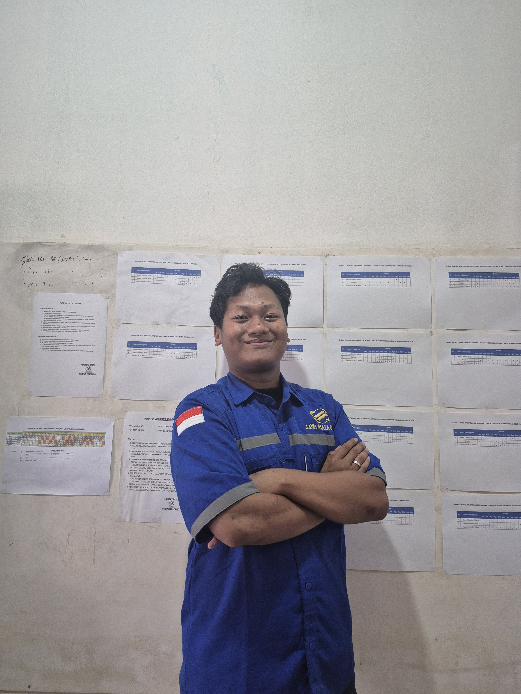

Lead Tim IT & Siswa SMK RPL di Rootera Plumbing
Sebagai siswa aktif SMK Rekayasa Perangkat Lunak (RPL), fokus peran dominan saya (~70%) berpusat pada kepemimpinan Tim IT & Rekayasa Web di Rootera Plumbing—brand sekaligus anak perusahaan dari Jaya & Jawa (J&J) Group penyedia jasa spesialis saluran pipa mampet profesional 100% tanpa bongkar (non-destructive) dan bebas soda api. Peran teknologi ini diperkuat secara harmonis oleh peran pendukung Customer Service dan Dokumentasi Lapangan.

Yero Virdhan Akifan di Lokasi Proyek
Siswa SMK RPL yang aktif merekam dan mengarsipkan pengerjaan saluran pipa mampet untuk validasi mutu layanan klien.
Rootera Plumbing: Brand Unggulan Jaya & Jawa (J&J) Group dalam Jasa Saluran Pipa Mampet Modern
Sebagai brand dan anak perusahaan strategis di bawah naungan Jaya & Jawa (J&J) Group, Rootera Plumbing (rooteraplumbing.id) didirikan khusus untuk menjawab keresahan masyarakat Indonesia terhadap masalah saluran pipa air mampet yang sering kali ditangani secara keliru oleh tukang konvensional.
1. Spesialis Saluran Pipa Mampet Tanpa Bongkar (*Non-Destructive*)
Sering kali tukang saluran air konvensional mengharuskan pembongkaran lantai keramik, pembongkaran bak kontrol, atau memotong dinding beton hanya untuk mencari letak sumbatan. Hal ini menyebabkan biaya renovasi membengkak dan lingkungan hunian menjadi kotor serta rusak.
Standar Rootera Plumbing (Jaya & Jawa Group): Sebagai jasa saluran pipa mampet profesional, seluruh tindakan dilakukan melalui lubang pembuangan yang ada (*floor drain* atau *cleanout*). Kabel spiral fleksibel dan mesin rotary kami bekerja meliuk mengikuti alur pipa tanpa merusak fisik keramik maupun sambungan pipa PVC, menjamin lantai Anda utuh 100%.
2. 100% Tanpa Soda Api & Bebas Bahan Kimia Berbahaya
Penggunaan soda api (*Natrium Hidroksida / NaOH*) adalah kesalahan fatal yang sering dilakukan saat saluran mampet. Reaksi panas eksotermik dapat melelehkan sambungan pipa PVC, membuat pipa melengkung, menimbulkan kebocoran ke bawah lantai, dan mengeraskan lemak menjadi gumpalan sabun padat (*saponifikasi*).
Kebijakan Jaya & Jawa Group: Rootera Plumbing memberlakukan standar mutlak Zero Caustic Chemicals. Seluruh pembersihan kerak lemak, sampah padat, rambut, maupun endapan lumpur dilakukan secara mekanikal kinetik dan semburan air hidrolik yang ramah lingkungan dan aman untuk aset bangunan.
Tiga Senjata Utama Penanganan Pipa Mampet Rootera
Inovasi peralatan rekayasa mekanikal dan optik modern milik Rootera Plumbing (Jaya & Jawa Group) yang menjamin saluran lancar tuntas tanpa merusak pipa.
Mesin Spiral Rotary Elektrik
Mesin bertenaga torsi tinggi yang memutar kabel baja karbon spiral fleksibel. Didesain secara spesifik untuk bergerak lincah menembus lekukan tajam siku pipa 90 derajat (*elbow*) dan perangkap air (*P-trap*).
- Kepala pisau khusus (*cutter head*) untuk memotong akar pohon
- Mengikis kerak lemak beku dan endapan kalsium membandel
- Menarik serat kain, plastik, rambut, dan sampah padat keluar
Kamera Inspeksi CCTV Pipa
Sistem endoskopi perpipaan optik beresolusi tinggi yang dilengkapi lampu LED penerang anti-air. Kamera dimasukkan ke dalam saluran untuk inspeksi visual kondisi riil bagian dalam pipa secara langsung (*live feed*).
- Mendeteksi letak pasti sumbatan dengan meteran digital
- Menemukan retakan pipa, patahan, atau kemiringan pipa salah (*slope*)
- Bukti rekaman video transparan *Sebelum & Sesudah* bagi klien
High-Pressure Hydro-Jetting
Penyemburan air mikro bertekanan ekstrem mencapai ribuan PSI melalui nozel rekayasa khusus yang berputar 360 derajat. Mampu mencuci bersih seluruh dinding pipa hingga lapisan diameter aslinya kembali seperti baru.
- Sangat efektif untuk limbah lemak pekat di restoran & kafe
- Membersihkan lumpur tebal pada pipa pembuangan utama (*main drain*)
- 100% murni air tanpa aditif kimia berbahaya
Fokus Utama Tim IT & Kontribusi Tiga Pilar di Rootera Plumbing
Sebagai siswa aktif SMK Rekayasa Perangkat Lunak (RPL), porsi dedikasi terbesar saya (~70%) difokuskan pada keunggulan Tim IT & Arsitektur Digital, dengan didukung secara harmonis oleh peran operasional pelayanan pelanggan dan dokumentasi lapangan untuk menghadirkan solusi saluran pipa mampet terbaik dari Jaya & Jawa Group:
Tim IT, Web Engineering & Sistem
Rekayasa Perangkat Lunak (SMK RPL) • J&J Group
Sebagai siswa aktif SMK jurusan Rekayasa Perangkat Lunak (RPL), ini adalah peran utama dan paling dominan saya di Rootera Plumbing. Menerapkan kompetensi rekayasa perangkat lunak modern untuk merancang, memelihara, dan mengoptimalkan ekosistem digital perusahaan: mulai dari situs resmi rooteraplumbing.id, optimasi SEO teknis ramah Google, hingga otomatisasi alur kerja operasional jasa pipa mampet.
Customer Service & Edukasi
WhatsApp 0815-1996-7047 • User Feedback Loop
Berfungsi sebagai peran pendukung strategis yang menghubungkan calon pelanggan dengan tim teknis Rootera Plumbing (Jaya & Jawa Group). Interaksi langsung ini menjadi user empathy yang sangat berharga bagi saya sebagai siswa RPL untuk memahami kebutuhan riil pengguna, yang kemudian diintegrasikan ke sistem IT.
Dokumentasi Lapangan
Visual On-Site • Kurasi Rekaman CCTV Pipa
Turun langsung ke lapangan saat diperlukan untuk merekam autentisitas kerja teknisi dan inspeksi endoskopi saluran pipa mampet. Aset visual ini diverifikasi dan diolah kembali oleh Tim IT menjadi materi portofolio digital yang transparan dan dapat diakses pelanggan secara akurat.
Mengapa Kombinasi Peran Ini Memberikan Dampak Nyata?
Bukti visual dari Dokumentasi Lapangan diolah oleh Tim IT menjadi konten edukasi dan portofolio di website rooteraplumbing.id, yang kemudian digunakan oleh Customer Service (WA: 0815-1996-7047) untuk meyakinkan klien mengenai standar kerja jasa saluran pipa mampet Rootera Plumbing. Alur ini menciptakan transparansi total dan kepercayaan pelanggan yang tinggi.
Protokol 4 Langkah Menangani Saluran Mampet
Setiap pengerjaan Rootera Plumbing (Jaya & Jawa Group) mengikuti alur kerja terstruktur untuk memastikan hasil maksimal tanpa coba-coba.
Inspeksi Awal CCTV
Kamera mikro endoskopi dimasukkan ke saluran untuk melihat jenis sumbatan (lemak, akar, benda padat) dan kondisi fisik dinding pipa.
Pemilihan Instrumen
Menentukan mata pisau spiral rotary atau nozel hydro-jetting yang sesuai dengan diameter serta konfigurasi belokan pipa.
Pembersihan Mekanikal
Operasi spiral rotary elektrik fleksibel berkecepatan tinggi melancarkan sumbatan tanpa merusak lantai atau dinding sama sekali.
Verifikasi & Laporan
Kamera CCTV dimasukkan kembali untuk memverifikasi pipa 100% bersih dan lancar, disertai penyerahan rekaman video transparan.
Solusi Presisi Pipa Mampet Bersama Rootera
Percayakan pemulihan saluran pembuangan Anda kepada ahlinya di Rootera Plumbing (Jaya & Jawa Group), atau hubungi kami langsung via WhatsApp untuk konsultasi cepat.